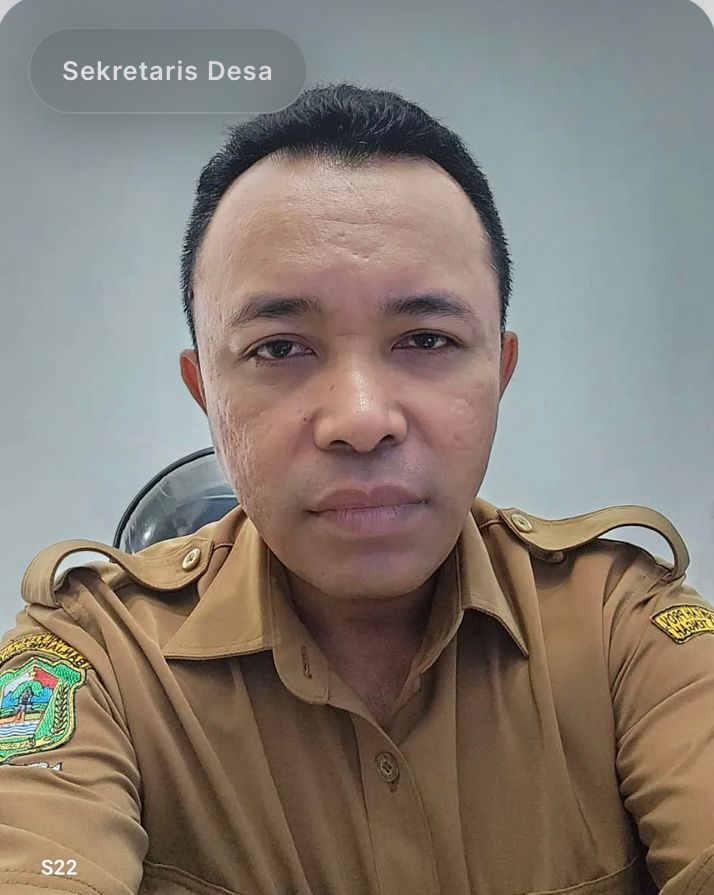
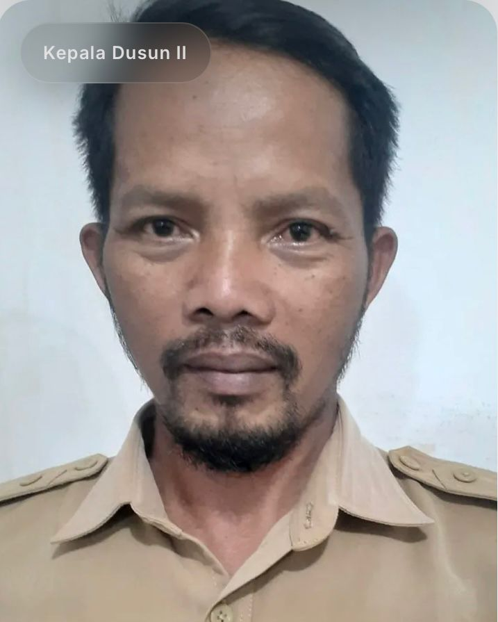
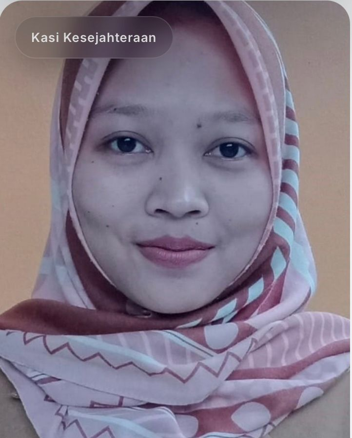
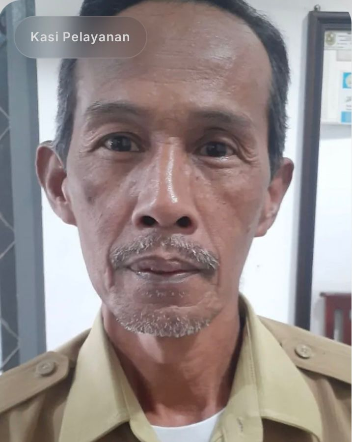
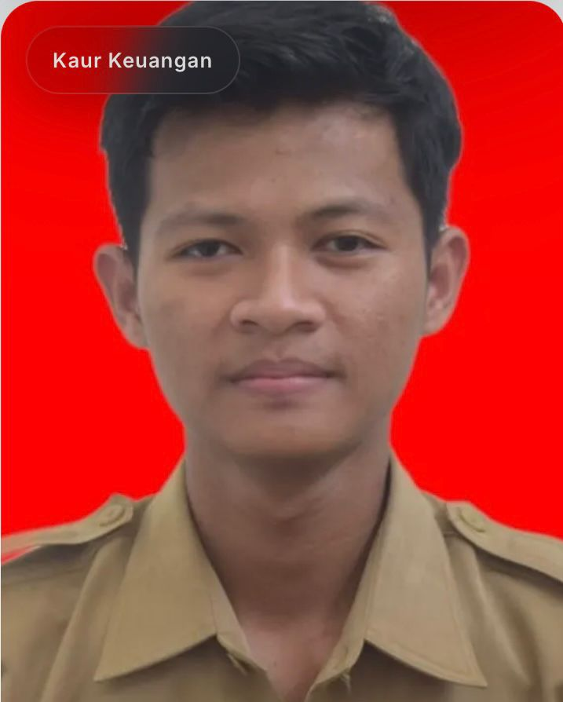
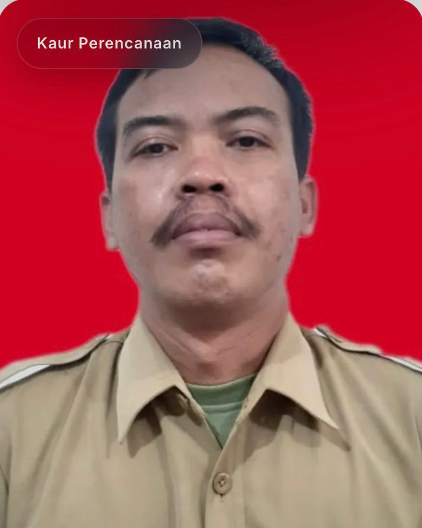
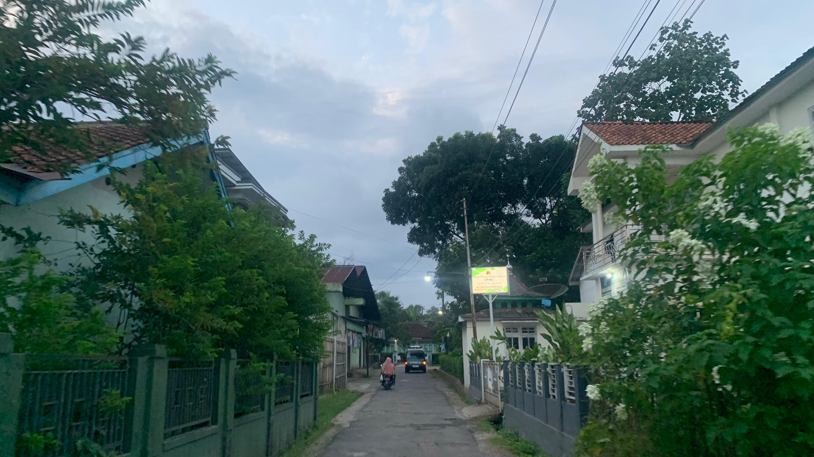
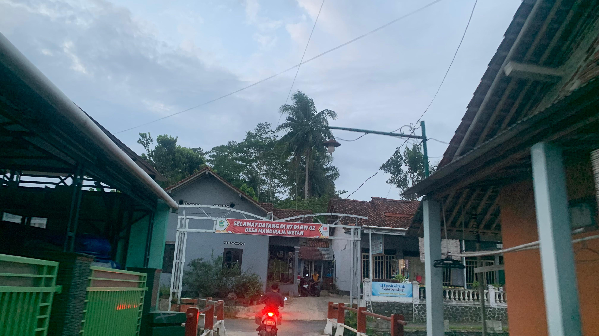
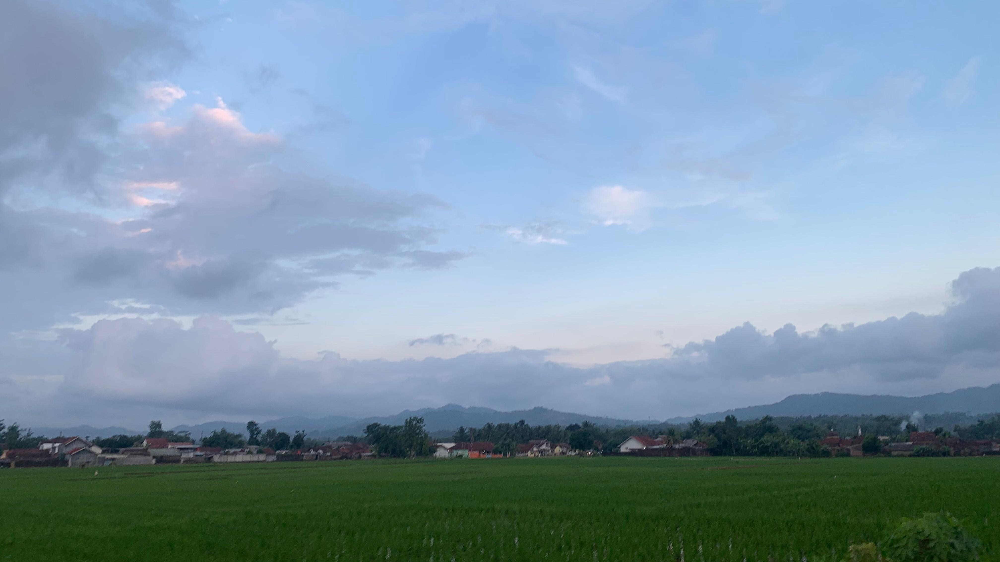

Di Website Resmi Desa Mandiraja Wetan
Pada jaman dahulu Desa Mandiraja Wetan masih berupa hutan. Mandiraja Wetan dan Mandiraja Kulon adalah satu Desa yang bernama Mandiraja. Mengapa dinamakan Mandiraja karena pada jaman dahulu banyak tumbuh pohon sayur yang disebut bayam raja liar yang pohonnya besar, tapi daunnya tidak bisa dimakan.
Pohon tersebut memiliki banyak duri pada tangkainya yang apabila mengenai anggota badan dapat mengakibatkan abses. Dengan berjalannya waktu, Desa Mandiraja dibagi menjadi dua yaitu Desa Mandiraja Wetan dan Mandiraja Kulon sekitar tahun 1915.
“Terciptanya Masyarakat Mandiraja Wetan yang Mandiri, Berbudi, Bahagia dan Sejahtera”
Supriyono S.H
Memimpin pemerintahan desa, mengelola pembangunan, pemberdayaan masyarakat, dan menjaga ketertiban serta kesejahteraan warga desa

Danang Setiaji
Mengelola administrasi pemerintahan desa, menyusun laporan, membantu kepala desa dalam administrasi keuangan, serta memastikan kelancaran administrasi dan dokumentasi desa.
Sugiono
Memimpin, mengoordinasikan, dan melaksanakan pelayanan pemerintahan serta pembangunan di wilayah Dusun I.

Misno
Memimpin, mengoordinasikan, dan melaksanakan pelayanan pemerintahan serta pembangunan di wilayah Dusun II.

Khumairah Prihutami, S.Pt
Melaksanakan urusan di bidang kesejahteraan masyarakat, meliputi pendidikan, kesehatan, sosial, budaya, ekonomi, serta pemberdayaan masyarakat untuk meningkatkan kualitas hidup warga desa.

Slamet
Melaksanakan urusan pelayanan kepada masyarakat, meliputi peningkatan partisipasi masyarakat, ketertiban umum, serta pelayanan administrasi dan informasi publik di desa.
Inung Ludi Nofiati, A.Md.Keb
Melaksanakan urusan ketatausahaan, administrasi umum, pengelolaan arsip, perlengkapan, aset, dan layanan umum pemerintahan desa untuk mendukung kelancaran operasional kantor desa.

Angger Herlana
Mengelola administrasi keuangan desa, termasuk perencanaan anggaran, pencatatan pemasukan dan pengeluaran, serta pelaporan keuangan sesuai dengan peraturan yang berlaku.

Miswandi
Menyusun rencana pembangunan desa, mengelola data pembangunan, serta mendukung perencanaan program dan kegiatan desa.
Syahid Anwar, S.Ag
Melaksanakan urusan pemerintahan desa, meliputi administrasi kependudukan, penataan wilayah, ketertiban dan keamanan, serta penyusunan regulasi dan dokumen pemerintahan desa
| No | Data Statistik | Jumlah |
|---|---|---|
| 1 | Jumlah Penduduk | 4.710 Jiwa |
| 2 | Jumlah RW | 3 |
| 3 | Jumlah RT | 23 |
| 4 | Penduduk Laki-laki | 2.385 Jiwa |
| 5 | Penduduk Perempuan | 2.325 Jiwa |
| 6 | Usia 0-17 tahun | 1.134 jiwa |
| 7 | Usia 18-55 tahun | 2.345 jiwa |
| 8 | Usia 55 tahun ke atas | 1.230 jiwa |
| 9 | Jumlah KK | 1.415 KK |
Usaha pertanian padi yang menjadi salah satu sumber mata pencaharian utama masyarakat Desa Mandiraja Wetan.
Budidaya ikan lele yang menghasilkan produk berkualitas untuk memenuhi kebutuhan pasar lokal dan sekitar.
Berbagai hasil kerajinan tangan yang dibuat oleh warga dengan kreativitas dan ciri khas daerah.
Menyediakan kebutuhan pokok sehari-hari bagi masyarakat dengan harga yang terjangkau.
Jasa pemotongan dan pembersihan ayam yang membantu memenuhi kebutuhan masyarakat dan pelaku usaha kuliner.
Usaha kuliner yang menyediakan mie ayam dan bakso dengan cita rasa khas, menggunakan bahan berkualitas dan menjadi salah satu makanan favorit masyarakat.



Jl. Raya Mandiraja Wetan No. 14
mdrjawetan2024@gmail.com
0822-2015-7686